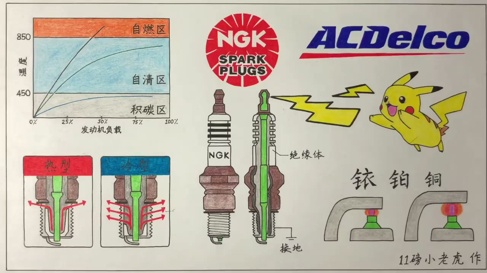
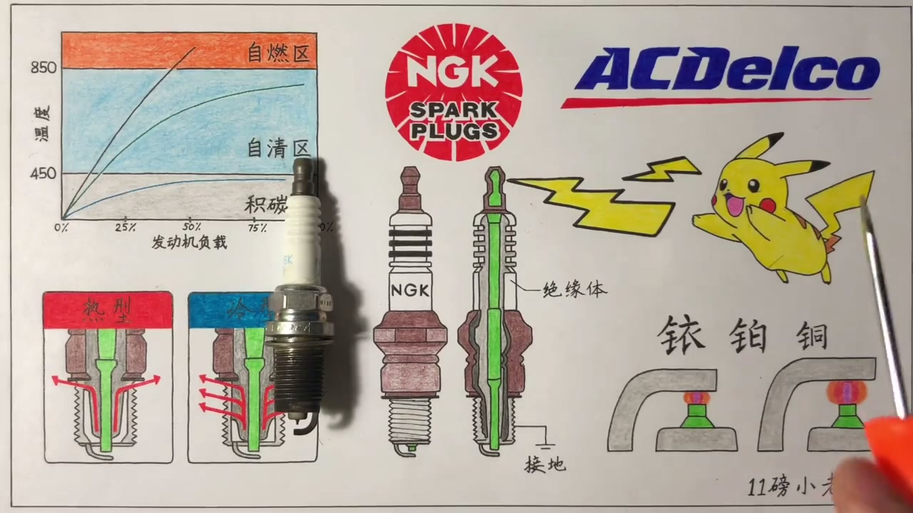
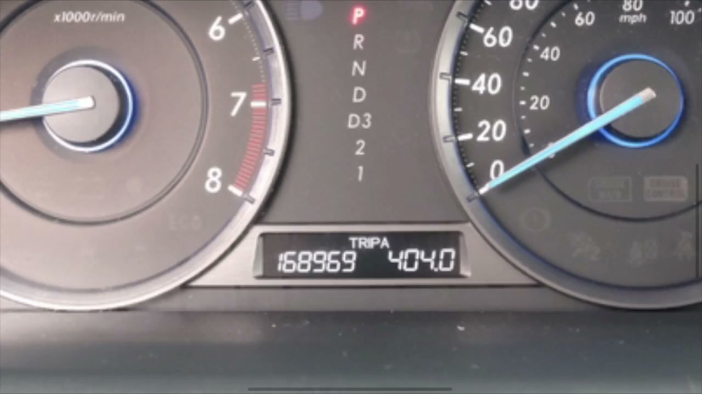
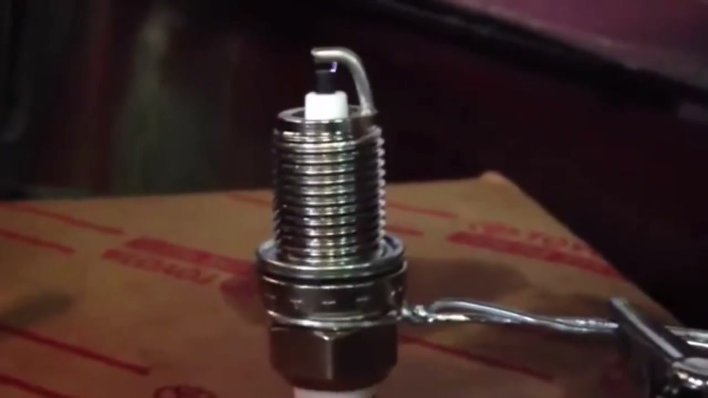
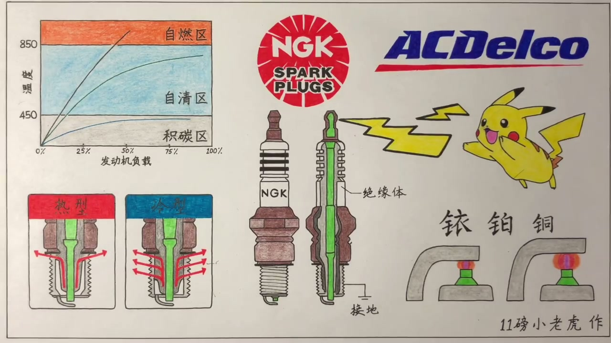
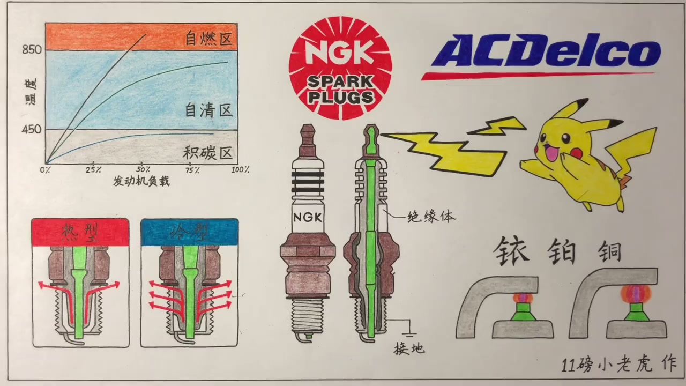
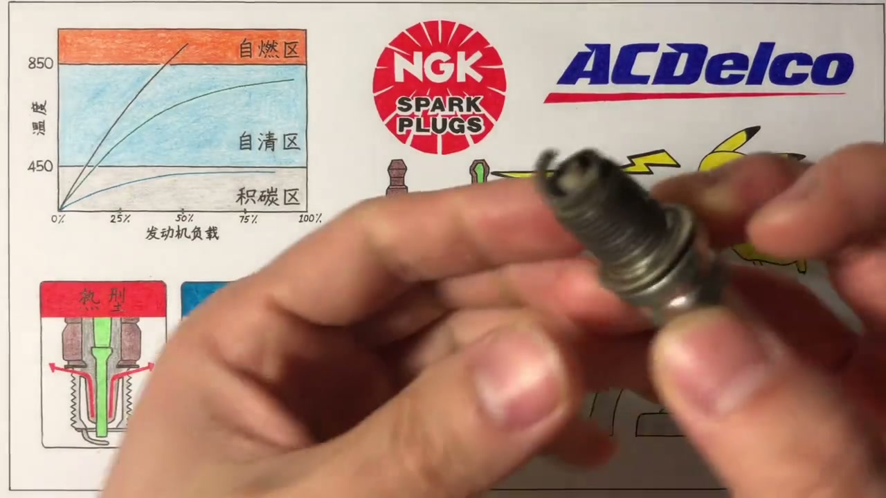

01
中文
想要让汽油发动机运行，就离不开一个点火的步骤。
EN
Running a gasoline engine requires an ignition step.
表达提示ignition（点火）

Scene English · 汽车 · 火花塞
Spark Plugs (1): Structure, Materials, and Gap
🎧 语音讲解
The Spark Plug's Job
情境汽油发动机运行离不开点火步骤，这个点火任务就是由火花塞完成的。火花产生在中心电极尖端和L型接地电极之间。
想要让汽油发动机运行，就离不开一个点火的步骤。
Running a gasoline engine requires an ignition step.
表达提示ignition（点火）
这个点火的任务就是由火花塞来完成的。
That job falls to the spark plug.
表达提示spark plug（火花塞）
火花产生实际上就是在尖尖的中心电极和L型的接地电极之间。
The spark arcs between the pointed center electrode and the L-shaped ground electrode.
表达提示center electrode（中心电极）
ignition（点火
spark plug（火花塞

Positive, Negative, and Ground
情境火花塞中心是贯穿到顶端的金属杆（正极），被白色陶瓷绝缘包裹。L型部分是螺纹的延伸，螺纹直接旋在发动机缸盖上。车身和发动机的金属部分都是负极（接地），所以L型部分就是负极。
绿色的中心金属杆贯穿整个火花塞，为了绝缘被白色陶瓷包裹。
A metal center rod runs through the plug, insulated by white ceramic.
表达提示insulated（绝缘的）
车身和发动机的金属部分都被认为是负极，也就是接地。
All body and engine metal counts as negative—ground.
表达提示ground（接地）
L型的部分是螺纹的延伸，而螺纹直接接触发动机的缸盖，所以它就是负极。
The L-arm extends from the threads, which bolt into the head—so it's the ground.
表达提示ground electrode（接地电极）
insulated（绝缘的
ground（接地
How It Fires
情境需要点火时行车电脑通过高压包给火花塞正极一个约两万多伏特的电压，正极两万多伏、负极零伏，巨大的电压差击穿两电极间的空气形成火花，完成点火，原理和闪电类似。
需要点火时，行车电脑通过高压包给火花塞正极一个非常高的电压。
At ignition, the ECU fires the plug through the coil with a very high voltage.
表达提示ignition coil（高压包）
这个电压一般在两万多伏特左右。
That voltage is around 20,000 volts.
表达提示20,000 volts（两万多伏）
巨大的电压差在两电极之间击穿空气，从而形成火花，也就完成了点火。
The huge voltage gap arcs across the air between the electrodes, making the spark that fires the charge.
表达提示arc（电弧）
ignition coil（高压包
20,000 volts（两万多伏

Three Common Materials
情境市场上常见的中心电极材质有三种：铜的、铂金的、铱金的。
中心电极在一般市场上可以看到的有三种：铜的、铂金的和铱金的。
Center electrodes come in three common flavors: copper, platinum, and iridium.
表达提示platinum（铂金）
三种材质寿命和价格从低到高分别是铜、铂金、铱金。
From cheapest and shortest-lived to priciest and longest: copper, platinum, iridium.
表达提示iridium（铱金）
platinum（铂金
iridium（铱金

The Copper Plug
情境铜火花塞最常见也最便宜，整根都是铜做的，只在尖端覆盖一层镍合金。铜的导电导热性特别好，但铜很软、镍合金也不硬，长时间火花电弧会让中心电极很快磨损，寿命较短，可能两三万公里就磨损完。为了延长寿命把尖端做大到2.5毫米直径，但面积大了打相同火花需要更大电压，好在铜导电性好互相抵消。八九十年代老车用得多，现在涡轮增压高压比高转速发动机反而还用它。
铜火花塞最便宜，整根铜做，只在尖端覆盖一层镍合金。
Copper plugs are cheapest—copper throughout with a nickel-alloy tip.
表达提示nickel alloy（镍合金）
铜的导电导热性好，但很软，长时间火花电弧会让中心电极很快磨损，寿命比较短。
Copper conducts well but wears fast under the arc—short lifespan.
表达提示wear（磨损）
可能两三万公里就差不多磨损完了。
They're often gone by 20,000–30,000 km.
表达提示gone（磨损完）
现在的涡轮增压高转速发动机有一部分还在用铜火花塞，因为它导电导热好。
Some modern turbo, high-rpm engines still use copper for its conductivity.
表达提示conductivity（导电性）
nickel alloy（镍合金
wear（磨损

The Platinum Plug
情境铂金比镍合金硬得多、熔点更高。把一片铂金焊到铜火花塞尖端覆盖住，原来的铜火花塞就变成了铂金火花塞，中心电极磨损慢很多，也能承受更高点火电压，寿命可达16万公里。现在绝大多数车用这种。双铂金火花塞是在接地电极上也焊一层铂金，正负极两头都有，进一步提高性能和寿命。
把一片铂金焊到尖端覆盖住，铜火花塞就变成了铂金火花塞。
Weld a platinum pad over the tip and a copper plug becomes platinum.
表达提示platinum pad（铂金片）
中心电极的磨损慢很多，也能承受更高的点火电压，寿命可达16万公里左右。
Wear slows dramatically, voltages rise, and life stretches to ~160,000 km.
表达提示lifespan（寿命）
双铂金火花塞是在接地电极上也焊一层铂金，正负极两头都有。
Double platinum welds pads on both electrodes—positive and ground.
表达提示double platinum（双铂金）
platinum pad（铂金片
lifespan（寿命

The Iridium Plug
情境铱金是三种里最贵的：铱比铂硬六倍、强度高八倍、熔点高近700度。焊在中心电极表面能进一步提升寿命。因为铱非常硬，火花对电极表面磨损非常慢，中心电极尖端直径可以做得非常小，最小只有0.4毫米左右，既省铱金成本又提高点火效率——电极尖端直径越小打出火花所需电压越低。
铱比铂金硬六倍，强度高八倍，熔点高出将近七百度。
Iridium is six times harder than platinum, eight times stronger, and melts ~700°C higher.
表达提示six times harder（硬六倍）
铱非常非常硬，火花对电极表面的磨损变得非常非常慢。
Its hardness makes electrode wear glacially slow.
表达提示glacially slow（非常慢）
中心电极尖端直径可以做到非常小，最小可能只有0.4毫米左右。
The tip can be tiny—as small as 0.4 mm.
表达提示0.4 mm（0.4毫米）
直径越小，打出火花所需要用到的电压就越低，能更轻松打出火花。
A smaller tip needs less voltage to spark—easier ignition.
表达提示less voltage（更低电压）
six times harder（硬六倍
glacially slow（非常慢

Which Material to Use
情境车要用哪种材料的火花塞要翻车主手册，手册让用哪种就用哪种最稳妥。应该用铜的不要升级，应该用铂金或铱金的不要降级。价格参考：铜或镍合金十几二十块，铂金二三十块，铱金五六十块。
要用哪种材质，去翻你的车主手册，它让用哪种你就用哪种，这是最稳妥的。
Follow the owner's manual—whatever it specifies is the safe choice.
表达提示owner's manual（车主手册）
该用铜的不要去升级，该用铂金或铱金的不要去降级。
Don't upgrade a copper spec, and don't downgrade a platinum or iridium spec.
表达提示upgrade / downgrade（升级 / 降级）
铜或镍合金一个十几二十块，铂金二三十块，铱金要到五六十块一个。
Copper runs ¥15–20, platinum ¥20–30, iridium ¥50–60 each.
表达提示price（价格）
owner's manual（车主手册
price（价格
The Spark Plug Gap
情境间隙指中心电极到L型接地电极之间的距离，一般在0.6到1.8毫米之间。间隙越小火花尺寸越小，越大火花越大。点火时希望火花大一点，和油气混合体接触面积大，点火效率更高。但间隙大了需要更大电压，而且火花形成速度变慢。低压缩比注重油耗的家用车间隙设计较大，让更多汽油接触火花；高压缩比注重性能的运动车间隙设计较小，火花行程时间短，利于电脑精确控制点火正时。
间隙指中心电极到L型接地电极之间的距离，一般在0.6到1.8毫米之间。
The gap is the distance from center to ground electrode—typically 0.6–1.8 mm.
表达提示gap（间隙）
间隙越大火花尺寸越大，和油气混合体接触面积变大，点火效率更高。
A bigger gap makes a bigger spark, touching more mixture for better ignition.
表达提示mixture（油气混合体）
但间隙大了需要更大的电压，而且火花形成的速度变慢了。
But a larger gap needs more voltage and forms the spark slower.
表达提示slower（更慢）
换火花塞不仅要用对材质，买回来还要检查并调整间隙。
Beyond material, always check and set the gap after buying.
表达提示check and set（检查调整）
gap（间隙
mixture（油气混合体
The Gap Tool
情境检查和调整间隙用的是锥形厚度规：很薄的一边越往这边转越厚。测量时把两电极之间放进去找到卡住的位置，读出英寸或毫米数值。要扩大间隙就把电极放到圆孔里轻轻向上掰，掰过头了直接按在桌子上压一下，直到达到标准。
检查调整间隙常用的是这种工具，一边很薄，越往这边转越厚。
A tapered gauge does the job—thin at one end, thicker as it turns.
表达提示tapered gauge（锥形厚度规）
把火花塞两电极之间放进去，转不动卡住的位置就是间隙值。
Slide it between the electrodes until snug—that spot reads the gap.
表达提示snug（卡住）
要扩大间隙就把电极放到圆孔中轻轻向上掰，掰过头了就按在桌子上压回来。
To widen, hook the electrode in the hole and pry gently; overshot? Press it back on the bench.
表达提示pry（撬）
tapered gauge（锥形厚度规
snug（卡住
说火花塞任务
说正负极
说点火原理
说三种材质
说间隙
说怎么换
该用什么就用什么。
高压包配铜塞磨损极快。
间隙影响点火效率。
正品大牌更稳。
一切都以手册为准。